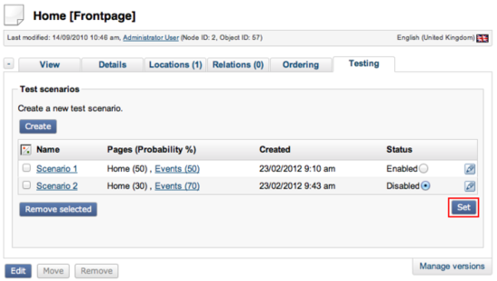
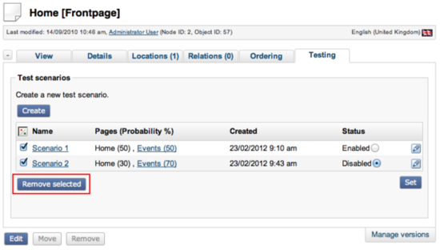
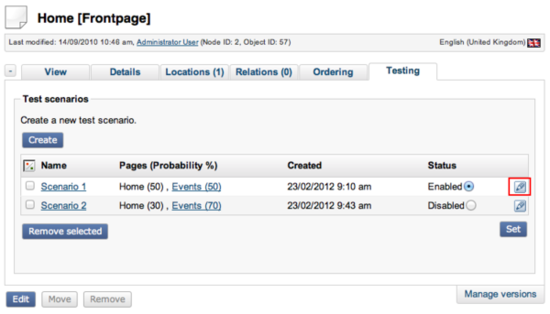

Managing test scenarios
This section explains how you manage your test scenarios. Mainly focusing on the editing, enabling or disabling and removing defined test scenarios.
Changing state
If you have two or more defined test scenarios you can easily change the state from enabled to disabled and vice versa. Note that only one test scenario can be enabled at the time. In order to change test scenario state do the following:
- Select radio button in the Status column for the test scenario you want to change state for as presented on the illustration 6.
Illustration 6
- Next, click on the “Set” button located on the right hand side below the table to change test scenario state
Removing
You can easily remove one or more test scenarios. In order to do so, follow these steps.
- Select one or more test scenarios that you want to delete as presented on the illustration 7
Illustration 7
- Next, click on the “Remove selected” button. Note that you can't restore already removed test scenarios. You will perform a hard delete.
Editing
You can edit already defined test scenarios, in order to do so follow these steps:
- In the each test scenario row there is an “Edit” icon, simply click on it as presented in the illustration 8.
Illustration 8
André R. (24/02/2012 2:37 pm)
Geir Arne Waaler (28/02/2012 9:23 am)
Comments
There are no comments.